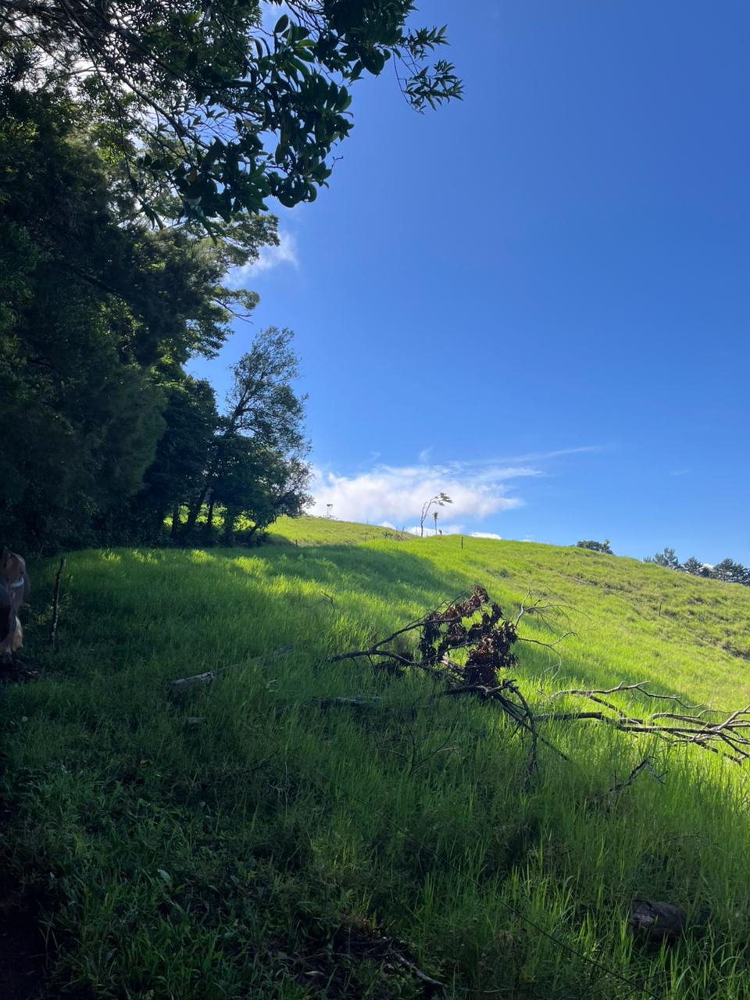
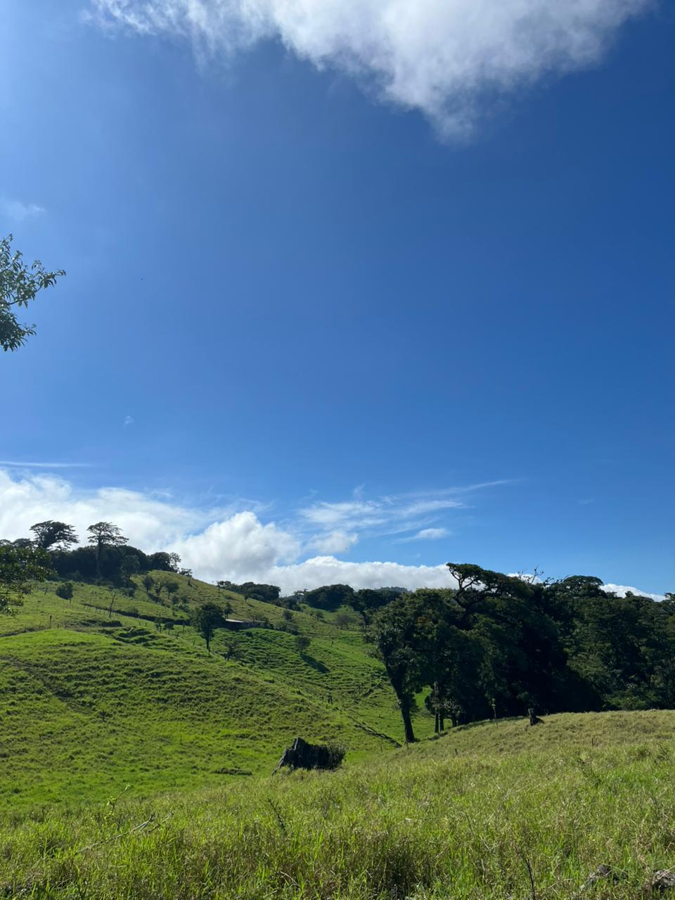

Rescate Lácteo
¿Cuál es el problema?
Productores en comunidades como Cabeceras de Tilarán, Tronadora, El Dos y La Florida enfrentan dificultades para comercializar su leche por falta de enlaces con compradores y problemas logísticos. Rescate Lácteo crea un punto de encuentro digital para facilitar la venta y coordinación.
Agricultura rural
¿Cómo funciona Rescate Lácteo?
1. Registra tu producción
Registra datos básicos para que compradores conozcan tu oferta.
2. Consulta productores
Filtra por comunidad, estado y productos principales.
3. Conecta y vende
Contacta directamente al productor y coordina la compra.

Sobre Rescate Lácteo
Rescate Lácteo es una iniciativa que conecta productores de zonas rurales de Costa Rica con compradores locales y regionales. Nuestro objetivo es facilitar ventas, coordinación y apoyo técnico para mejorar la comercialización y resiliencia de los productores.
A través de nuestra plataforma digital, los productores pueden registrar su información, consultar otras ofertas de la zona y conectar directamente con compradores interesados en sus productos lácteos de alta calidad.

Productores en nuestra plataforma
Nuestra comunidad en números
Rescate Lácteo es un proyecto educativo y comunitario que busca mejorar la comercialización y resiliencia de productores locales.